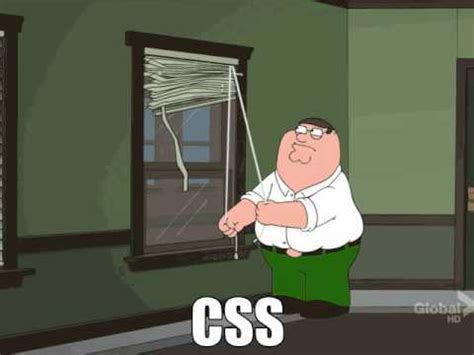

Learning a new UI framework is an investment. Like learning how to use any tool there is a learning curve. It will take time to be comfortable with a UI framework and even more time to master it. Just like with learning any new tool there is a “risk reward” relationship but rather than risk and reward it is time (and maybe money) vs. the.One example non-learning related is a washing machine. Washing machines are very expensive and purchasing one is not feasible for everyone. However, long term using a laundry mat will actually be more costly.
This is the same way learning new skills has to be viewed. Maybe it seems like a large investment upfront but, what is the end payoff going to be? Does it make it worth it? The answer varies.
The image shows a graph with a hypothetical time cost for an activity given two approaches (y-axis hours spent, x-axis day). The first (the green shaded area) we can see takes constant time (2 hours per day) while the second (purple area) requires a large time investment at the beginning (like learning a new tool), however, reduces down to no time per day before day ten. Now we can take the integrals of the functions to get the cumulative time spent in each of the approaches. This is shown by the red an black lines. Black represents the first constant time approach and red represents the second approach. We can see that by day 21 our first constant time approach will actually have cost us more time over all.
So if the task is only something you would need to do for 10 days it would make sense to take the constant time approach, and if it is something that would take more than 21 days the second approach where a new skill is learned to eventually (by day ten) automate the work would be more time efficient in the long run.
This threshold is somewhere different for each individual circumstance. This is only an example to convey the idea rather than the relationship using a UI framework versus using plain HTML and CSS has.
The example relationship in the graph assumes that the more time intensive (learning a new tool) requires less time once mastered than the constant time (using already possessed knowledge). In fact, in that example by day 10 the task has been automated and requires no time. This is of course a rudimentary example and does not directly map to every situation.

My first experience with web development was a few months after I learned my first programming language R. During this time I was working on a dashboard to display mental health and substance use statistics. We were working under the constraint that we had to only use pure CSS and HTML (and JavaScript). I remember often becoming very frustrated trying to make the simplest change (such as centering elements). As I searched online for solutions I often saw answers referencing Bootstrap (a UI framework). At the time I didnʻt understand it and it seemed like just an additional hurdle to jump through especially because the webpage was already mostly built out using pure HTML and CSS (of course it would have still been easy to add components from UI frameworks in).
Now that I have experienced that very UI framework, Bootstrap I see why there were many solutions using it. It makes UI tasks such as having a footer stuck to the bottom of the page trivial. Also, there are plenty of UI tasks that are exhibited in almost every webpage and this way you are not reinventing the wheel each time or copy/pasting CSS classes from one project to another.
There is, however, still a relationship similar to the one shown by the graph (I would argue less extreme). Although UI frameworks can be very helpful there is a learning curve. For example while using CSS classes from these framework provided classes it’s very easy to override CSS that you deem more important and it takes some getting used to and possibly a better understanding of the CSS hierarchy then simply using pure CSS would. Overall though after the learning curve knowing and using a UI framework becomes much more efficient then sticking to pure HTML and CSS.
Although I am still in the “learning curve” for using UI frameworks I believe it has already had a payoff and I already develop webpages with less effort (and headaches).